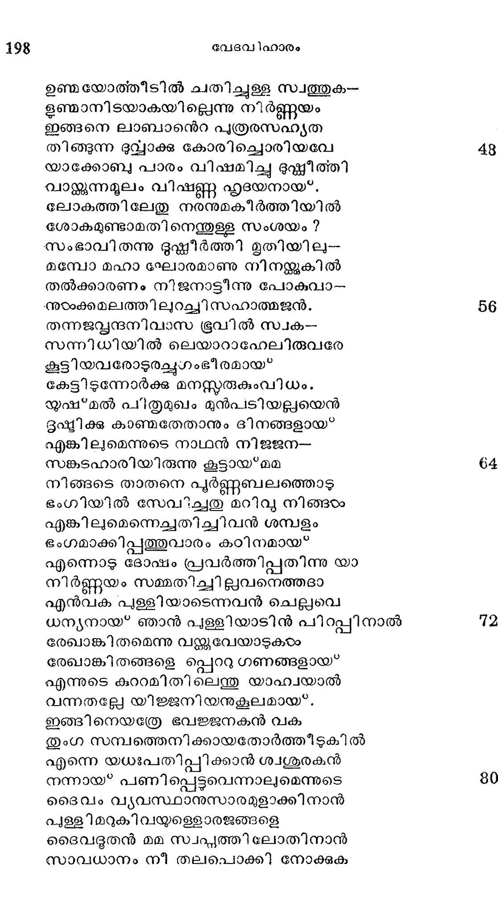

യക്കോബിന്െറ ഗൂഡഃപലായനം
വൃത്തം--കാകളി
ത്രന്കരത്തിങ്കലൊരു കാശുമെന്നിയേ
വന്കൊല പേടിച്ചു സ്വന്ത നാട്ടിൽനിന്നു
വന്നു ലാബാന് തന്നടിമയായ്*ജീവിച്ചു
വന്ന യാക്കോബിന്നതിസംഖ്യമായുള്ള
പൊന്നും പണങ്ങളം ഗോമേഷപ്തന്ദവും
തിണ്ണെന്നു വര്ദ്ധിച്ചു വന്നതത്യത്ഭുതം
ലോകരിവനെറ സമുന്നതികേട്ടതി
മോഹാകുലരായ് പകച്ചുനോക്കടടുന്നു.
ഇപ്പോളവനെജ്ജയിപ്പാനവനുടെ
കെല*പുള്ള സ്വാമിയ്യം ശക്തനാകാദ്ദഡം.,
ഞാഞ്ഞൂല് വളര്ന്നിട്ടനന്തനോടേററു---
നാഞ്ഞു വിഴങ്ങുമെന്നാരാനറിഞ്ഞിതോ ?
എങ്കിലും വേണ്ടിതിലത്ൃന്ത വിസ്മയം
ശങ്കകൂടാതെ സ്ഥിരോദ്യമവും ലോക-
പങ്കനിഷുദനന് തന്െറ കടാക്ഷവും
തങ്കുമെങ്കിലൊരു നിസ്്കാരമര്ത്ൃനും
തുംഗമാമൈശ്വര്യമാകെ ക്കരസ്ഥമാം
മംഗള വത്താമവനുടെ ജീവിതം.
യാക്കോബിനുണ്ടായൊരഭൃദയം പൊറാ-
ഞ്ഞുടംക്കാളമീര്ഷ്യാഭരത്തോടവനുടെ
മതുലപത്രരേവം ക/ഥിച്ചീടിനാര്
ജാതുപരമാത്ഥചിന്തകൂടാതെ താന്:
യാക്കോബിനുള്ളോരനന്ത സമ്പത്തുക--
ളൊക്കെയുമുണ്ടായതിന് വഴിയാരുമേ
ശോധിച്ചറിയുന്നതില്ല ഞങ്ങടംക്കതു
ബോധിച്ചിടുന്നുണ്ടു വേണ്ടപ്രകാരത്തില്
ഞങ്ങടെ താതന് സകല വസ്തക്കള--
മിങ്ങിവന് കയ്യില് കൊടുത്തിരുന്നാകയാൽ
പാങ്ങുംപതവും൦ം പറഞ്ഞവ മിക്കതു --
മിംഗിതംപോലെ കരസ്ഥമാക്കീടിനാന്
ഉണ്ടായതെല്ലാമിവിടെ നിന്നല്ലാതെ
കൊണ്ടുവന്നില്ല തന്ദേശത്തു നിന്നവന്
ഇന്നാട്ടിലെത്തിയ കാലത്തിണത്തുണി --
തന്നെയുമില്ലാഞ്ഞതോര്ക്കുന്നു ഞങ്ങളും
ഭീത്തിയുണ്ടെങ്കിലതിന്മേലൊരു മഹാ
ചിത്രമെഴുതുന്നതത്ഭുതമല്പലഹോ!
പ്രതൃത, കയ്യില് കിടച്ചൊരന്യന്വക
സ്വത്തു തിരികെ ക്കൊടുപ്പതാണുത്തമം.
അന്യനെ വഞ്ചനചെയ്*ക സുസാധമാ-
മാന്യന്െറ നേര്ക്കു വിശ്വസ്ത ദുഷ്കരം.
തീരെയട്
മയായ* വന്നവനി പ്പൊഴു-
താരിലും മേന്മയെഴും പ്രഭുവായിതു
എന്തുകളിയിതു വഞ്ചനക്കാര് ഭവി
ചിന്തിക്കിലുന്നതന്മാരായിടുന്നുതെ
ഉണയോത്തീടില് ചതിച്ചുളള സ്വത്തുക--
ളണ്മാനിടയാകയില്ലെന്നു നിര്ണ്ണയം
ഇങ്ങനെ ലാബാനന്െറ പുത്രരസഹ്യത
തിങ്ങുന്ന ദുവ്വാക്ക കോരിച്ചൊരിയവേ
യാക്കോബു പാരം വിഷമിച്ചു ഭുഷ്ണടീത്തി
വാള്കുന്നമൂലം വിഷണ്ണ ഹൃദയനായ.
ലോകത്തിലേതു നരനുമകീര്ത്തിയില്
ശോകമുണ്ടാമതി നെന്തുള്ള സംശയം ?
സംഭാവി തന്നു ദുഷ്ണീര്ത്തി മൂൃതിയിലു-
മമ്പോ മഹാ ലഘോരമാണു നിനയ്ക്കുകില്
തല്ക്കാരണം നിജനാട്ടീന്നു പോകുവാ-
.നുടംക്കമലത്തിലുറച്ചി സഹാത്മജന്.
തന്നജപ്ഡന്ദനിവാസ ഭൂവില് സാവക--
സന്നിധിയില് ലെയാറാഹേലിരുവരേ
കൂട്ടിയവരോടുരച്ചുഗംഭീരമായ*
കേട്ടിടുന്നോര്ക്കു മനസ്തരുകുംവിധം.
യുഷ്മല് പിതൃമുഖം മുന്പടിയല്ലയെന്
ഭൂഷ്മിക്കു കാണ്മതേതാനും ദിനങ്ങളായ*
എങ്കിലുമെന്നുടെ നാഥന് നിജജന--
സങ്കടഹാരിയിരുന്നു കൂട്ടായ*മമ
നിങ്ങടെ താതനെ പൂര്ണ്ണബലത്തൊടു
ഭംഗിയില് സേവിച്ചതു മറിവു നിങ്ങഠം
എങ്കിലുമെന്നെച്ചതിച്ചിവന് ശമ്പളം
ഭംഗമാക്കിപ്പത്തുവാരം കഠിനമായ*
എന്നൊടു ദോഷം പ്രവര്ത്തിപ്പതിന്നു യാ
നിര്ണ്ണയം സമ്മതിച്ചില്വനെത്തദാ
എന്വക പുള്ളിയാടെന്നവന് ചെല്ലവെ
ധന്യനായ് ഞാന് പുള്ളിയാടിന് പിറപ്പിനാല്
രേഖാങ്കിതമെന്നു വയ്ക്കുവേയാടുകടം
രേഖാങ്കിതങ്ങളെ പ്പെറു ഗണങ്ങളായ*
എന്നുടെ കുറാമിതിലെന്തു യാഹ്വയാല്
വന്നതല്ലേ യിജജനിയനുകൂലമായ്.
ഇങ്ങിനെയത്രേ ഭവജ്ജനകന് വക
തുംഗ സമ്പത്തെനിക്കായതോര്ത്തീടുകില്
എന്നെ യധഃപതിപ്പിക്കാന് ശ്വശൂരകന്
നന്നായ* പണിപ്പെട്ടവെന്നാലുമെന്നുടെ
ദൈവം വ്യവസ്ഥാനുസാരമുളാക്കിനാന്
പുള്ളി മറുകിവയ്ളെളാരജങ്ങളെ
ദൈവദൂതന് മമ സ്വപ്പത്തിലോതിനാന്
സാവധാനം നീ തലപൊക്കി നോക്കുക

ബിന്ദ്വാദിയള്ള മുട്ടാടകളാണജാ
സംഗമത്തിന്നു മുതിരുന്നതത്ഭുതം
ഉണ്ടാകയില്ല നിനക്കു പരാജയം
വേണ്ടുവോളം മേഷവ്ധന്ദമുണ്ടാം തവ.
ലാബാന് നിനക്കു വിപര്യയമായിഹ
ഭാവിപ്പതെല്ലാമറിയുന്നതുണ്ടു ഞാന്
യാതൊരേടത്തു പ്രതിജ്ഞ ചെയ്ത ഭവാന്
യാതൊദരടത്തഭിഷിക്തമായ*സ്മംഭവും
തല്പ്രദേശത്തിന്െറ നായകനാണു ഞാന്
വ്ൃക്തമാക്കീടില് ബെതേലിന്നധിശ്വരന്.
തന്നിമിത്തം നീയെഴുന്നോററു നിന്നുടെ
ജന്മദേശത്തേക്കു പോക സകന൯തുകം
എന്നീവിധം മമ ദൈവമുരപ്പതാല്
ഇന്നുതന്നേ യാത്ര ചെയ്യുന്നു ഞാനിതാ.
ഇബ'ഭാഷിതങ്ങളാകര്ണ്ണനം ചെയ്തട--
നിപ്രകാരം ചൊന്നു ലാബാന് കുമാരികടം.
പ്രാണേശ്വര! ഭവദാജ്ഞാപനമൊരു
നാണംവിനാ ശിരസാ വഹിപ്പൂ വയം
അസല് പിതൃ ഭരണത്തിലിനിയൊരു
വസ്തവിലില്പവകാശവുമെന്നു താന്
താതനന്െറ ഭാവം മുഖേന ധരിച്ചിഹ
വീതസന്ദേഹം മരുവുന്നു ഞങ്ങളും
എന്നതു മാത്രമോ ഞങ്ങടംക്കിനിബ*ഭവാ-
നെന്നതല്ലാതില്പവലംബമാരുമേ.
അന്യരെന്നല്ലേ വിചാരിച്ചിടുന്നു തന്
നന്ദിനിമാരാകുമെങ്ങളേ ത്താതനും
താവകസേവനേ വേതനമായവ--
നാവാം തവ നല്കി യേവമീ ഞങ്ങളേ
വിററു വിലവാങ്ങി സാപ്പിട്ടതല്ലാതെ
ചെററു മുതലിവക്കേകിയുമില്ലവന്.
അച്ഛനില് നിന്നെടുത്തങ്ങേന്ത്ു നലകിയ
തുച്ഛേതരമാം ദ്രവീണ കദംബകം
ഞങ്ങഠംക്കുമാത്മ ജാതര്ക്കമായല്പയോ ?
മംഗലാത്മാവു കരുതിയിട്ടള്ളതും
ഈദൃശമോര്ത്താലിവി ടെയൊരു മിനി--
ററാദഭരാല് താമസി ക്കേണമെന്നില്ലിഹ.
ഞങ്ങളം കൂടെബ*ഭവാനോട കൂടവേ
തുംഗഭമാദേന പ്വറപ്പെടുന്നിപ്പൊഴേ.
എങ്ങു ഭത്താവിനെറ പാദം ചരിക്കുന്നില്ല
തങ്ങു തന്നേ ഭരണീയമാര്ക്കും ഗതി.
ചന്ദ്രനേവിട്ട പിരികില്ല ചന്ദ്രികാ
ചന്ദനത്തേയുലേക്ഷിക്കാ സുഗന്ധവും.
കേട്ട യാക്കോബനും ചൊന്നിതു നിങ്ങളേ
വിട്ടപിരികയെന്നുള്ള തൊരിക്കലും
ഇഷ്ടമല്ലാ മമ സാദ്ധ്യവുമല്ലടല്
വിട്ട വേറായ് നില്പതുണ്ടോ നിഴലിനേ?
നിങ്ങളേക്കൂടി ക്കനാനില് നയിക്കണ--
മിങ്ങനെയാണു മമാശയമെങ്കി ല--
മിങ്ങറികൊല്പാ ശ്വശൂരന് കഥയിതു
ഭംഗമുണ്ടാക്കും ഗമനമറിയുകില്
ജംഗമസ്വത്തുകളെലാമെടുത്തു നാം
തൊങ്ങണമെന്നുടെ ദിീക്കിന്നു സത്വരം.
മാമക ദാസ്യമൈശ്വര്യപ്രദമെന്നു
തൂമയില് വിശ്വസിച്ചുള്ള ഭവല്പ്പിതാ
തെല്യമറിയാതെ പോകാനൊരുതരം
നല്പപോല് നോക്കിയിരിക്കുന്നു ഞാനിഹ
എന്നു പറഞ്ഞു ചിലദിനം ചെല്പവേ
ധന്യനാം ലാബാനൊരിക്കൽ സപത്രകം
മേഷലോമകഛേദനോമത്സവമാസ്കദി --
ചവാശു ഗമിച്ചാന് ബഹുതരടദൂരത്തില്.
ഇത്തക്കമിസ്്റഹപുത്രന് പരമുപ
യുക്തമാക്കിത്തനിക്കള്ള സമ്പ സ്വവും
ഭാണ്ഡരൂപത്തില് മൃഗകലത്തിന് മീതു
തിണ്ണെന്നുവച്ചു ഗമനം തുടര്ന്നിതു.
പാകം പുതപ്പു വിളക്കുകഠം തോല്ക്കുടം
പാകത്തിനുള്ള കലം കുട്ടകങ്ങളം
പെട്ടികരം വട്ടിയരലു മുലക്കയ്ം
ചട്ടി ചിരവ ചരടുകടം കട്ടിലും
തൊട്ടിതുടപ്പം തിരികല്ലരിപ്പയോ -
ടൊട്ട വളരെത്തവികരം കുഴലുകടം
കുട്ട കറിക്കത്തി തൂമ്പ കൂന്താലിയും
മുട്ടി വിറക മഴുക്കാം പലേതരം.
മൂക്കത്തി മോതിരം കുല്ലാവു ദര്പ്പണം
ദുഖ്യതയേലും പരിമളപ്പെട്ടികഠം
ഒട്ട വളരെ ച്ചെറുസഞ്ചി കാല്ത്തള
പട്ടുകഠം പ്രക്ലദം സാല്വാ ലലാടിക
ചന്ദ്രക്കലകടം തലപ്പാവു മാലകരം
ചന്ദ്രിക തോല്പയം വളകഠം കവണിയും
ഉത്സവവസ്ത്രം തകിട്ടകൂടിത്യാദി
കൃത്സ്നാഭരണസംഭാര സമൂഹവും
ധാന്യച്ചുമഴുകടം ധാരാള മാളകഠം
മാന്യസ്ഥിതിന്ക്കനുരൂപിച്ച കോപ്പുകയം
എല്ലാം ശരിപ്പെടുത്തി ക്കൊണ്ടു മേഷാദി
കല്യമൃഗങ്ങളനവധി കൂട്ടിയും
നില്ലാതെയുള്ള നെടുയാത്ര ചെയ്യുവാന്
കല്യാണശീലന് മുതിര്ന്നാന് യകൂൂബകന്
ഓടിയേതാന്ദിനം കൊണ്ടു :യവപ്രസ്ഥ ?
മുഡമോദം കടന്നഗ്ശിലയാദിലേ
പര്വ്വതം നോക്കി നടന്നാന കൂപാര-
നിവ്വിശേഷം പരന്നുള്ള ഗണവുമായ*.
ഏററവും ദുരത്തു നിന്നടുത്തെത്തുന്ന
പററലര്ഭീതനാം യാക്കോബിനേ സ്വയം
വാതാഹതിയാലലഞ്ഞിളകം തുണ--
വ്രാരങ്ങളെക്കൊണ്ടു തന്നരികത്തേക്കു
തുംഗോത്തമാംഗനാം ശൈലം ക്ഷണിച്ചിതു
മംഗളാത്മാവിന് പ്രതിനിധിയെന്നപോല്.
ശസ്തമോടെത്തിയടുത്താന് ധരാധര--
പ്രസ്ഥമതില് സമസ്മാത്ഥ സാത്ഥാത്തൊടും.
യാക്കോബു ചെയ്ത പലായനത്തിന് കഥ
മൂര്ഖസ്വഭാവീയാം ലാബാന് തരിമ്പുമേ
വേദിചിടാതെ തന് മേഷ നിവേശന--
മേദിനിയില് പരിപൂര്ണ്ണ സന്തുഷ്ടനായ
സ്വസ്രീയനെ ക്കളിപ്പിച്ചതും രുന്നുടെ
പുത്രിമാരെ കാശു യാതകം കൂടാതെ
വേളികഴിച്ചു കൊടുത്തതും കഴശല--
ക്കോളില് സ്വകാമം ഫലിപ്പിച്ചതും മുദാ
കൂട്ടുകാരോടു പറഞ്ഞു രസിക്കവേ
പെട്ടെന്നൊരാടം വന്നുരച്ചിതേ മാതിരി:
സ്വാമിന്, ഭവടദ്ാസനായ യാക്കേഃബു തന്
കാമിനിമാരപത്യങ്ങളിവരെയും
ചേടക ചേടീ നിവഹ മവ൨ന്നുളെളൊ--
രാടുകടം മാടുകടം സാമാനമൊക്കെയും
കെട്ടിപ്പെറുക്കി യൊതരുത്തരുമോരാത്ത
ഘട്ടത്തിലയ്യോ തിരിച്ചക്ക്നാന് ദിശി.
എന്തൊക്കെയും കൊണ്ടുപോയെന്നറിവില്ല
നിന്ഗ്രഹബിംബമവിടെയില്ലാ ദൃഡം.
ഇക്കാര്യമങ്ങേയറിയിപ്പതിന്നു ഞാന്
നില്ക്കാതുടന് പുറപ്പെട്ടവെന്നാകിലും
മൂന്നാം ദിനമാണിവുടെ വന്നിക്കഥ
ചൊന്നീടുവാനീവിധത്തില് കഴിഞ്ഞതും.
ആകയാലെന്താണു ചെയ്യേണ്ടതെന്നു നീ
പാകബുദ്ധ്യാ വീചാരിച്ചുറച്ചീടുക.
ലാബനീ വാക്കുകഠം കേട്ടോരു മാത്രയി --
ലാവില ചിത്തനായ* കത്തവ്യമൂഡനായ*
പാമ്പു പൊന്യോരു പാമ്പാട്ടി പോല് ബഹ--
സംഭ്രമം പൂണ്ടങ്ങുഴന്നു തുടങ്ങിനാന്.
അല്പനേരം ചിന്തചെയ്തിട്ടവന് ഹൃദി
ഷാല്പന ചെയ്താനനുഗമിച്ചീടുവാന്
കന്നു ദിനം കഴിഞ്ഞെന്നാലമോടിയാല്
ചെന്നു ചേരില്ലേയവന്നടുക്കല് വയം?
ഒന്നു പരിശ്രമിച്ചീടുക സാദ്ധ്യമാ-
യെന്നു വരികില് സഫലമാമാന്തരം.
ലാബാന്െറ അനുധാവനം
ഈദൃശം ചിന്തിച്ചനുചരന്മാരൊടും
മാതുലന് ധാവനം ചെയ്തത്തരക്ഷണം.
എഴുടിനം യാത്ര ചെയ്യോരനന്തര
മാഴി കടന്നക്കര ച്ചേർന്ന മാതിരി
ശുംഗമാകും ഗിലയാദഹാര്യത്തിന്െറ
ഭംഗിയേറും പ്രാന്തമെത്തി യാക്കോബു തന്
താവളത്തിന് സമീപത്തായ പട കുടി--
“സ്ഥാപനം ചെയ്ത കൃതാത്ഥനായിീടിയാന്.
രാത്രീയിലീശന് സ്വപനത്തില് ലാബനു
പ്രത്യക്ഷമായിട്ടരച്ചാന് ഭവാനൊരു
സാഹസവാക്കോ പ്രവ്വത്തിയോ ചെയ്യരു--
താഹവ ചിന്തകളക സ്വസ്രീയനിൽ.
ഈ വിധം വൈരാഗ്യവാളിനന്െറ മൂര്ച്ചപോയ*
കൈവന്ന ശാന്തതയോടു ലാബാന് നിജ
സോദരീപുത്രനോടുചിവാനെന്തു നീ-
യീദൃശം ചെയ്വാന് ഭഗനീ കുമാരക!
എന്നോടൊരു വാക്കരസ്റ്കാതെയും മമ
ധന്യപ്രജാവ്വന്ദ ചുംബനത്തിന്നൊരു
സന്ദരഭമേകിക്ക_, താത്ഥനാക്കാതെയും
ഛകരന്നയാത്രാപരനായതെന്തേ ഭവാൽ?
യുദ്ധേ ഹൃതരായ ബന്ദികടം പോലെയെന്
പുത്രിമാരേ ത്ധടിത്യാഹൃത്യ പോന്നത്--
ഹൃത്തില് മറക്കാവതലുാാത്തൊര്ക്രമം--
കൃത്യമത്രേ ലവം ചിന്തിച്ചു നോക്കുക.
എന്നോടു നീയൊന്നുരച്ചിരുന്നാകില് ഞാ-
നന്യാദദശാമോദമോടു നിന് യാത്രയേ
ഡിണ്ഡിമാദൃങ്ങളാം വാദ്യങ്ങംം കൊണ്ടഭി -
മണ്ഡനം ചെയ്യാതിരുന്നീടുമോ സ്വയം?
കാണിച്ചതെല്ലാം മബദ്ധമതിന്നു ഞാന്
നാണിച്ചിടുന്നു പ്രതിക്രിയ ചെയ്യുവാന്
ശക്തിമത്താണു പീഡിപ്പതിനെന് കരം
വ്യക്തമെന്നാലും കഴിഞ്ഞ നിശയിൽ നിന് 248
വംശേശ്വരന് തടത്തീടുകയാലിവന്
സംശയമെന്നേയേ ക്ഷമിക്കുന്നു സവ്വവും.
ആത്മീയമന്ദിര ദര്ശന വാഞ്ചയാൽ
ഛത്മനാ നീ പുറപ്പെട്ടവെന്നായ*വരാം.
എങ്കിലുമെന്നുടെ വിഗ്രഹം മോഷ്ടിച്ചു
പങ്കും വരുത്തിയതെന്തിന്നു നീ വൃഥാ.
ഓതിനാന് യാക്കോബിതിന്നു മറുപടി
ഭീതികൊണ്ടാണു ഞാന് പോന്നതു ഗൂഡമായ* 253
താവക പത്രിമാരെന് ദിശയില് ഗത-
രാവതമ്മാവന് തടയുമെന്നോര്ത്തു ഞാന്
ഭാര്യാത്മജാദികഠം കൂടാതെ ഞാന് പോവ
താര്യോചിത മല്ലയെന്നു ചൊല്ലേണമോ?
ആയതുകൊണ്ടു ഭദയാസഹിതം മാമ-
കാഗസ്്കതീരെ ക്ഷമിക്കുക മാതുല!
നിന്നുടെ ദേവനന്െറ വിഗ്രഹം ഞങ്ങളി-
ലിന്നൊരു മാനുഷ ജീവി തന് പക്കലും 264
കണ്ടുവെന്നാലവന് കണ്ണം ഞെരിച്ചിടാം
രണ്ടില്പപക്ഷം മരി ക്കേണമായവന്.
നിന്വക വല്പതുമുണ്ടെങ്കിലായതു
മാന്യബുദ്ധേ! നീയെടുക്ക പരസ്യമായ്.
റാഹേല് നിജപിതൃുടദൈവത മോഷണം
സാഹസബുദ്ധ്യാ നടത്തിയ വാസ്തവം
ലേശം ഗ്രഹിക്കാതെയാണു യാക്കോബനീ
ഭാഷിതം ചൊന്നതു ധൈര്യമനസ്സെൊടും. 272
ലാബാകന്റ ഗുൃഹബിംബാന്വേഷണം
സ്വസ്രീയവാക്കുകഠം ലാബാന് ശ്രവിച്ചള-
വെത്രയമുത്സാഹമോടു തന് ദേവനേ
കണ്ടിടമെല്ലാം തിരവാന് തുടങ്ങിനാന്
വേണ്ടപോല് യാക്കോബു തന് പടവേശ”*മനി.
പെട്ടികരം തമ്മുടെ പൂട്ടതുറക്കയ്ും
കെട്ടുകളെല്ലാ മഴിപ്പറന് ശ്രമിക്കയും
ഭാണ്ഡങ്ങളാകെത്തുറന്നതില് ക്ഴയ്ക്ിട്ട
ദണ്ഡമാര്ന്നും പരിശോധന ചെയ്കയും 480
വേണ്ടവിധത്തില് വെളിച്ചമേലാതുള്ള
കുണ്ടറ തന്നില് വിളക്ക കൊളത്തിയും
എത്താസ്ഥലങ്ങളില് പീഠമിട്ടിട്ടതി-
നആര്ദ്ധ്വഭാഗത്തു കരേറിനിന്നും മുദാ
നന്നായിടുങ്ങിയ ദിക്കില് കൃശാംഗനായ*
പന്നഗംപോലെ വലിഞ്ഞു കയറിയ്യം
ഭാരം വളരും തിരികല്ലിരിപ്പൊരു
ഭാഗത്തുനിന്നു പൊക്കിസ്ഥലം മാററിയം
തല്ലാദികളേ മുഴുക്കെയിളക്കിയും
പാല്ലാത്രമൂററിച്ചുവടുവിളക്കിയ്ും
നീണ്ടക്ഴലില് വടിയിട്ട കുത്തിയും
പണ്ടിക്കുടങ്ങളില് കയ്യിട്ട തപ്പിയും
ശുണ്ബീപിടിച്ിതേ മട്ടിലവന് ചിരം
വേണ്ടതും വേണ്ടാത്തതുമാം വിധങ്ങളിൽ
ഗോധിച്ചശേഷവും തന്വകയൊന്നുമേ
ബോധിക്കുവാനിട വന്നില്വിടതാല്
ലേയയും തദ്ദാസി സില്പ്പയം ബില്ഹയും
സ്റ്റായദ്രസം വാണിടുന്ന ദൂഷ്യങ്ങളില്
ചെന്നു പര്യേഷണ ചെയ്വാന് തുടങ്ങിനാന്
സുന്നമായ* വന്നിതതിലും ഫലം തദാ,
ഇപ്പരിശോധനയെല്ലാം കഴിഞ്ഞ വാ-
റല്ലേതരത്രപായ്യക്തനായ*ത്തന്നുടെ
പ്രതതിയാം റാഹില തനെറ പടകുടി-
യെത്തിറ്റുവേഷണാത്ഥം മുതിര്ന്നീടിനാന്.
ലാബനന് ചൊല്ലം വിധ റാഹില പിത്ൃ-
ദേവനേ യൊട്ടകക്കോപ്പിന്നകത്താക്കി
വച്ചിട്ടതിന്മേല് കരേറിയിരുന്നുകൊ-
ണ്ടച്ഛുനോടോതിനാടം നിന്നുടെ പുത്രി ഞാന്
(ന്രീധര്മ്മി ണിയെന്നറിക തിനാലത്രേ
താതാ! തവാഗ്രേ യെഴുന്നേററിടാത്തതും,
ഇത്ഥമവഠം ചൊന്നു വാക്കിനെ വിശ്വസി-
ച്ചൊട്ട്കക്കോപ്പിളക്കാതെ വിട്ടീടിനാന്.
അന്യസ്ഥലങ്ങരം മുഴുവനും ശോധന
നിര്ണ്ണയമാംവിധം ചെയ്തോരു ലാബനും
വിഗ്രഹലബ്ദിയണ്ടാവാഞ്ഞു ലജ്ജയാ
വൃഗ്രനായിട്ട തല താഴഴത്തി നിന്നുപോയ്.
ശര്രവ്യവസായ വൈഫല്യകാരണം
ലബ്ദാവകാശന് ജ്വലൽ ക്രധാസംയുതന്
യാക്കോബ് ഗംഭീരശബ്ദത്തിലിങ്ങനെ
വാക്കുരച്ചിടിനാന് ലാബനാഗ്രേ തദാ.
എന്താണു മാമക കുററമുരന്ക്കു നീ
യെന്തിത്ര വാശിയോടോടുവാന് കാരണം ?
എന്നുടെ ഭാണ്ഡങ്ങളൊക്കെ യഴിച്ചു നീ
ദുര്ന്നയബുഭ്ധ്യാ സുശോധനം ചെയ്തതില്
ഒന്നിലെന്നാലും ഭവദ്വസ്ത വലതും
നിന്നാല് സുദൃഷ്ടമമായോ വചിച്ചീടുക.
ഉണ്ടെങ്കിലായതു രണ്ടുപക്ഷസ്ഥരും
കണ്ടീടുവാനിങ്ങു കൊണ്ടന്നു വയ്ക്കുക.
മണ്ടകൊണ്ടൊന്നു ചിന്തിക്കയെന്നുള്ളതു
വേണ്ടതായ്ത്തന്നെ യിരുന്നിരുന്നൂ തവം
കാള പെറൊന്നു ശ്രവിക്കുന്ന മാത്രയില്
കോളല്യ വത്സബന്ധാത്ഥം തുനിവതും.
എന്തെങ്കിലും കേട്ട തുള്ളന്ന പുരുഷന്
സന്തപ്യനായ*ത്തീരു മന്തരമെന്തഭഹാ?
മാമകായ്യസ്തി ന്െറ പുഷ്ണിതമായൊരു
തൂമയെഴും രണ്ടു പത്തു സംവത്സരം
നിന്നുടെ സേവനാത്ലം ബലി നല്ലിനേ
നിന്നതു നീയറിയുന്നില്ല യെങ്കിലും
ആടുകടംക്കൊന്നിനും ഗര്ഭനാശം വന്നൊ-
രാടല് നിനക്കുദിപ്പിച്ചതില്ലിയിവന്
മാംസപ്രിയത്വം ഭവന്മേഷഹിംസനേ
പാംസുപ്രമാണം ത്വരിപ്പിച്ചുമില്ലമാം.
ഭൂഷ്ടയമൃഗങ്ങഠം കടിച്ചുകൊന്നുള്ളവ--
ഇൃത്തരവാദിയായ* നിന്നേ നിരന്തരം.
മോഷണം പോയവന്കള്ള പരിഹൃതി
ഭീഷണനാം നിന്െറ മുന്പില് ക്കഴിച്ചു ഞാന്.
സഹ്യമല്ലാത്ത വെയില് മൂലവു മവി.--
ഷഹ്ൃയമായള്ള തണ്ുപ്പുകൊണ്ടും ബഹു
ക്ഷീണശരീരനായ*ത്തീര്ന്നു നദിയുടെ
വേണി വേനല്യ ചെറുകും പ്രകാരമായ്.
ഇസ്ററേവനത്തിന് നികൃഷ്ടത കാണ്കയാ--
ലിത്തിരി മര്ശിപ്പതിന്നും മടിച്ചഹോ
നിദ്രാഖ്യമിത്ര മണുകാതെ യേകനായ്*
രാത്രി കളെതൂ കഴിച്ചിരിക്കുന്നു ഞാന്!
പരയരരിലാരും സുതകളേ വേരംപ്പൊരു
പൂരുഷരേ വിടുവേല ചെയ്യിപ്പതായ്
കോടംവിയുമില്പൊരറിവുമില്ലെങ്ങുമേ
താഴഴവടയും ഭവാനേകനല്ലാതിഹ.
ഇസ്താധു ഞാന് തവ പൃത്രിമാര്ക്കായിരു
വത്താണ്ടുകരം സേവ ചെയ്യേന് ദിവാനിശം.
പിന്നീടൊരാറു സമകള, ജഗണ-
ത്തിന്നായി ദാസ്യ മനുഭവിച്ചീടിനേന്.
പത്തുപ്രാവശ്യം ഭവാനെനന്െറ ശമ്പളം
നിര്ഭയബദ്ധ്യാ മറിച്ചുകളഞ്ഞു തേ.
സിദ്ധനാമെന്െറ പിതാമഹനബ്രഹാം
ചിത്തശുദ്ധ്യാ ഭജിച്ചുള്ളോരധീശ്വരന്
മല്പ്പിതാവാ മിസഹാക്കിന് ഭയത്തിനു-
ള്ളല്ലേതരാസ്ത്പദമാകീയ ദൈവതം
എന്പരിരക്ഷാപരായണനായിരു--
ന്നന്പോടെന് നന്മ കരുതിബ* ഭവാനുടെ
കാഠിന്യകര്മ്മം വിപാടനം ചെയ*വതി--
ആഡസമ്മോടമിരിക്കാതിരിക്കുകില്
ധാതൊന്നുമേകാതെ ശൂന്യ ഹസ്മത്വേന
യാതനാക്കിക്കളഞ്ഞേനെന്നെ നിര്ണ്ണയം
യതാധികത്വാല് ക്കഴഞ്ഞു വലയുന്ന
പ്രത്നായ്ള്ള ദരിദ്രനാം കര്ഷകന്
ഭടദ്ധ ഫലങ്ങളെടുത്തു മടങ്ങുവാ-
ന൯ുത്തമ ഭാഗ്യമരുളം പരാല് പരൻ
എന്മഹാ കഷ്ട പ്രയത്നങ്ങഠം കണ്ടു താ-
നിന്നലെ ക്കേസു വിധിപ്പാന് മുതിര്ന്നതും.
ഇങ്ങനെയേററം കരുണമാം വാക്കുകടം
തുംഗത്വമുള്ള ഗിലാദു ശൈലത്തിലേ
പാഠകം കൂടി യലിയം വിധത്തില-
സ്റ്റാരവാക്കാകും യകൂബനോതും വിധ
ഭൂധരം താനും സ്വകുന്ദര വായ*വഴി
സാദരം സത്യമിതെന്നു ഘോഷിച്ചിതു.
നീതികേടിനന്െറ ഭയങ്കരപട്ടിക
ജാതനിച്യേദ മിസഹ കുമാരകന്
ചൊന്നതു കേട്ടു നെടുവീര്പ്പു വിട്ടുപോയ്
മന്ദനാം മാരുതന് പ്രക്ഷബ്ദ മാനസന്.
പക്ഷികളെല്ലാം രവം നിറുത്തി സ്വക--
പക്ഷമിളക്കാതിരുന്നു പൊടുന്നനേ.
ഗഃദരവം കൊണ്ടു ശിലോച്ചുയ കൂടവും
ഭൈരവഭാവം ധരിച്ചു വിളങ്ങിതു.
ശര്രുപക്ഷത്തുള്ള റാമിയർ കൂടെയും
വിഭ്രതം സ്മംഭീഭവിച്ചാരതുമല്ല,
ഘോരഹൃദയനാം ലാബനും കണ്ണൂനീര്
കോരിച്ചൊരിയും വിധം നിഗ്ശുമിച്ചി തൂ.
ഓതിനാന് ലാബാന്: വിഷമിക്കവേണ്ട നീ
മാതുലന് ഞാന്, ഭവാന് സോദരീ പുത്രനും
നിന്നുടെ മക്കളെ ന്മക്കഠം, തവാജക-
മെന്നുടെ സ്വന്തം വിഭേദമെന്തോര്ക്കുകില് ?
ഇന്നുനിന് പക്കലിരിപ്പുള്ളതൊക്കെയു--
മൊന്നൊഴിയാതെ മമ വക നിര്ണ്ണയം.
എന്നുടെ വാത്സല്യ പാത്രങ്ങളാകുമെന്
നന്ദിീനിമാരവര്ക്കള്ള സനാനങ്ങഠം
എന്നിവരേ യവമര്ഭ്ദനം ചെയ്യവാ--
നിന്നിവന് സ്വപ്പത്തിലും നിനച്ചീട്മോ?
നിന്നിളപ്പത്തരം കൊണ്ടു ഭയന്നതാ-
ഒണെന്നുള്ളതിനെ വിവടിക്ക വേണ്ടെടോ.
എങ്കിലു മിന്നിമേല് ബന്ധുക്കളായ നാം
പങ്കഹൃദയരായ* ശണ്ണകളൊന്നുമേ
ഉണ്ടാക്കിടായ*വാന് പരസ്പരം ചേന്നൊരു
ഖണ്ഡനരൂപവ്യവസ്ഥയടങ്ങുന്ന
സംശ്രവം ചെയ്യാം; കലഹരോഗത്തിന്നു
സംശ്രവമല്ലൊ മഹയഷേോധം ഭൂതലേ.
ഇത്രയും കേട്ടവാറാശ്വസ്മ ചിത്തനായ”
ഇസ്സറഹ പുത്രന് നിലത്തു നിന്നേകമാം
പ്രസ്തമരം പൊക്കിയെടുത്തു നാട്ടീടിനാന്
ശസ്തമാം ശാന്തിദ്ധ്വജ മെന്നപോലവേ.
അന്യോന്യം യോജന നുചകമാകമി --
യുന്നതസ്മംഭം പ്രതിഷ്ഠിച്ചനന്തരം
തന്നനുചാരികളോടുരച്ചിസ്്റഹ--
നന്ദനന് കല്ക്കൂമ്പലൊന്നു കൂട്ടീടുവാ൯
ഇക്കൂമ്പലിന്മേലിരുന്നിരു പക്ഷ്യരും
നിഷ്ണകമ്പ മൊന്നിച്ചശിച്ചാര് വിഘസവും.
ഐക്ൃയമദിരാലഹരിയാലള്ളഴി--
ഞ്ഞക്കൂമ്പലിന്നിരു പാട്ടുകാരും മുദാ
സാക്ഷ്യ കൂമ്പാരമെന്നാഹ്വയ മേകിനാര്
സാക്ഷിയാം സവ്വേശ്വരനുടെ സന്നിധയ.
ലാബാനുരച്ചാന്: ഗഭീര സംരാവത്തി--
ലാവയോമ്മഭ്ധ്യേ യഹോവ താന് കാവലാരം
എന്മകളര്ക്കു നീ പീഡനം ചെയ്*കയോ ?
തണഞ്ജയോടന്കളേ വിവഹിക്കയോ?
ചെയ്യുമെങ്കില് നോക്ക! സല്ലേശനെന്നിയേ
പൊയ്യല്ലൊരുവരു മില്ലിതു കേടംക്കുവാന്.
സല്യകമ്മങ്ങളം കണ്ടു നിള്ലന്നൊരു
സവ്വേശ്വരന് സാക്ഷിയായിറരിപ്പു സദാ.
അന്യോന്യ പീഡനാത്ഥം കടക്കായ*വതി -
നിന്നു നമ്മേത്തടുത്തല്യോ ഭീമമായ"
നിള്ന്നതി ശ്ലീലാസ്മംഭവുമിച്ചെറ--
കല്ലന്നുമായവ സാക്ഷി കുളാക മേല്.
അബ്രഹാം നാഹോറിവരുടെ ടൈവവും
തല്ലിതുടദൈവവു മായോനിതിനുടെ
മദ്ധ്യസ്ഥനായ വിധിചെയ്യട്ടെയെന്നേതി
സത്യം കഴിച്ചാനറാമ്യനാം ലാബനന്.
യാക്കോബു മവണ്ണമുള്ള വാക്കച്ചരി--
ചഷ്യഠംക്കാമ്പിലെന്നു മിരുന്നരുളന്നൊരു 448
ചില്ക്കാതലാം പിതൃദൈവതത്തേ വിളി--
ച്ൃയംക്കനമാര്ന്നു കഴിച്ചിതു സത്യവും.
പിന്നീട് തന്െറ ഹൃദയ സന്തോഷവും
നന്ദിയും പ്രത്യക്ഷമാക്കും പടിക്കവന്
യജ്ഞമൊന്നങ്ങു കഴിച്ചാന് പ്രകാശി ത--
പ്രജ്ഞതയാര്ന്നിരു പക്ഷ്യരും രാത്രിയില്
ഭക്ഷിച്ചു പാര്ത്താർ; പ്രഭാതമാം വേളയി--
ലക്ഷാമ സഹൃദം ലാബാനെഴുന്നീററു 456
പുര്രിമാര് പുരതുരിവരെ പ്രചുംബിച്ചു
വ്യക്താശി ചൊല്ലി സ്വദേശം ഗമിച്ചിതു.